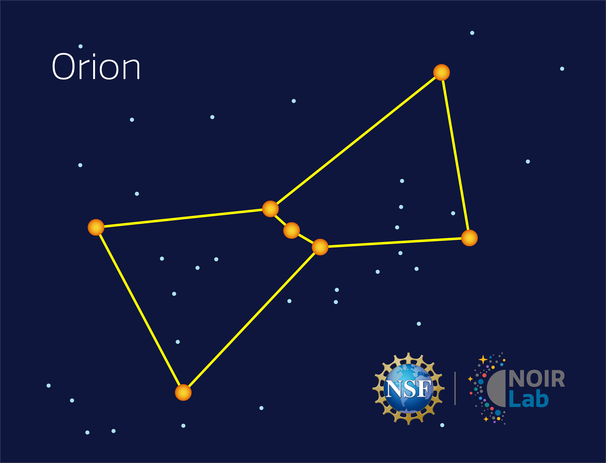
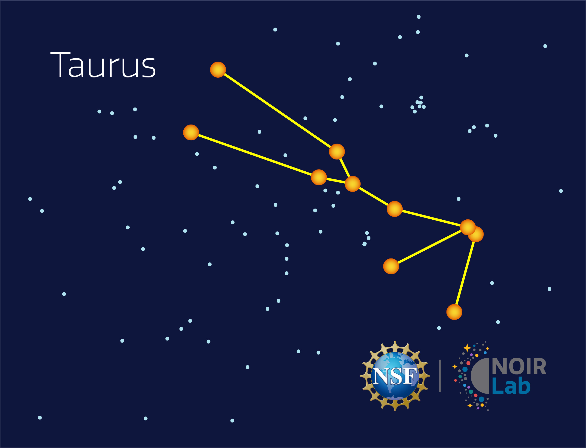
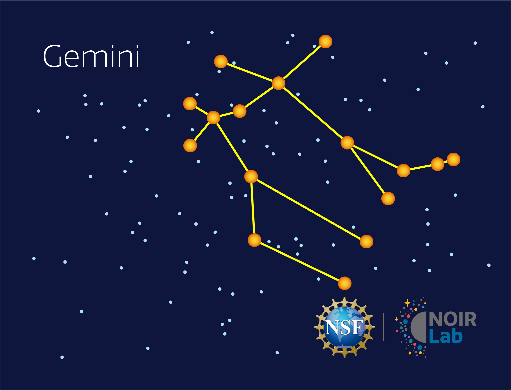
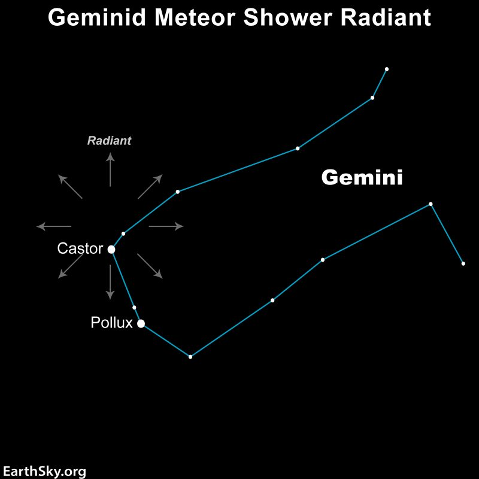

Winter nights in Southern California bring Orion, Taurus, and Gemini into view high overhead, three of the easiest constellations to spot due to their bright anchor stars. The Geminid meteor shower also lights up the sky in mid-December.

One of the most recognizable constellations, Orion is marked by three stars of his belt and anchored by the bright supergiants Betelgeuse and Rigel. It rises in the east and stands high overhead on winter evenings.
Click here for a real night-sky photo of this constellation.

Taurus is home to the bright red star Aldebaran and the Pleiades star cluster. It sits just above and to the west of Orion, with its V-shaped Hyades cluster forming the bull's face.
Click here for a real night-sky photo of this constellation.

Representing the twins Castor and Pollux, Gemini is marked by two bright stars of the same names sitting side by side. It rises to the east of Orion and climbs high overhead by mid-evening.
Click here for a real night-sky photo of this constellation.

The Geminids are one of the best meteor showers of the year. They peak in mid- December and can produce up to 120 meteors per hour under dark skies, radiating from near Castor in the constellation Gemini.